GAA Classes in Dublin
Explore 17 GAA classes for kids in Dublin, Ireland. Compare schedules, ages and pricing below, or contact a provider directly to book.
Cuala GAA Club
Youth academy introducing young children to Gaelic football, hurling and camogie fundamentals in a fun, structured environment at one of Dublin's largest GAA clubs.
View full details →Round Towers GAA Club (Clondalkin)
Nursery programme introducing young children to Gaelic football and hurling fundamentals in a fun, friendship-focused environment at one of Clondalkin's oldest GAA clubs.
View full details →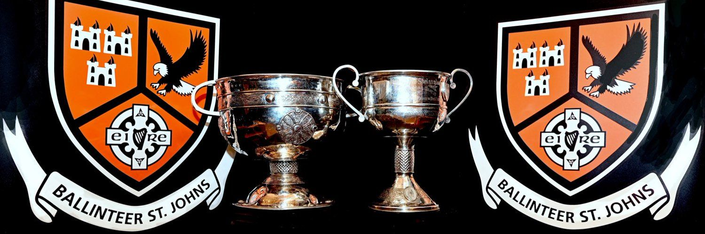
Ballinteer St. Johns GAA Club
Community GAA club offering juvenile Gaelic football and hurling training and nursery sections for children, registered with the Dun Laoghaire-Rathdown Sports Partnership club directory.
View full details →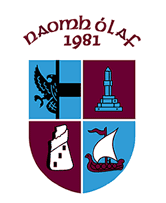
Naomh Olaf GAA
Community GAA club offering juvenile Gaelic football and hurling training and nursery sections for children, registered with the Dun Laoghaire-Rathdown Sports Partnership club directory.
View full details →
Shankill GAA Club
Community GAA club offering juvenile Gaelic football and hurling training and nursery sections for children, registered with the Dun Laoghaire-Rathdown Sports Partnership club directory.
View full details →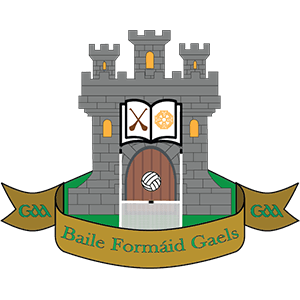
Ballyfermot De La Salle
Ballyfermot De La Salle GAA has a proud history of fostering Gaelic games and community spirit in Dublin 10. Established in 1953, the club has grown from grassroots beginnings to become a central hub for football and hurling in Ballyfermot and beyond, serving families from Bluebell, Clondalkin, Palmerstown, Lucan and further afield. The club runs a vibrant juvenile programme, with over 12 teams and a growing youth membership. A standout initiative is the Bear Cubs nursery, started in 2019, offering children aged 3-6 the perfect introduction to Gaelic games through fun, active play.
View full details →
Ballymun Kickhams
Ballymun Kickhams is one of Dublin's most well-known GAA clubs, with a proud tradition of developing talented players and a strong community spirit. The club has produced several Dublin senior footballers and continues to grow with a thriving juvenile section. Their popular Saturday morning nursery welcomes boys and girls aged 3 to 8 years, offering a fun, friendly and supportive environment to learn the basic skills of Gaelic football. It's a great way for young children to stay active, make friends, and build confidence.
View full details →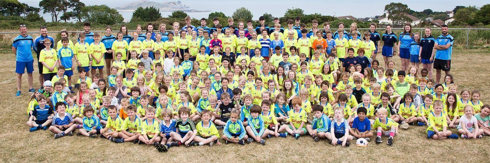
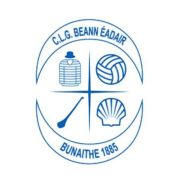
Beann Éadair
Located in Howth, Beann Éadair GAA is one of Ireland's oldest clubs, founded in 1885. With a strong community spirit and deep roots in Gaelic games, the club has grown rapidly in recent years and now boasts over 1,400 members. Beann Éadair offers juvenile football and hurling/camogie for boys and girls from Under 8 to Under 16. All teams play both codes and are led by a dedicated group of mentors.
View full details →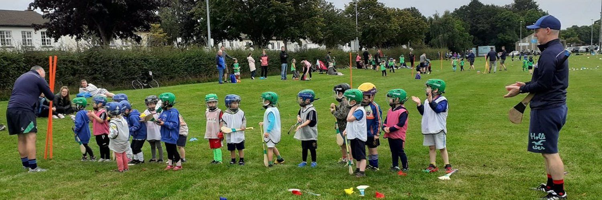
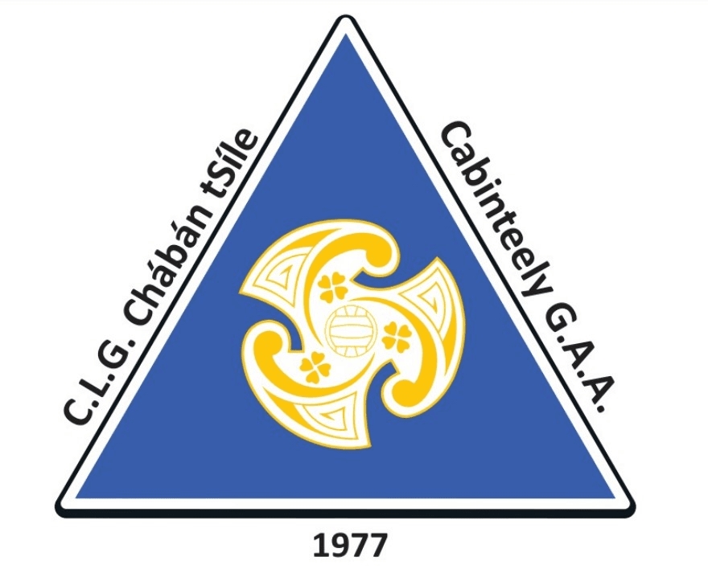
Cabinteely GAA
Cabinteely GAA has been at the heart of the community since 1977, providing Gaelic football and hurling/camogie for boys and girls of all ages. The club is based in Kilbogget Park and welcomes players from Cabinteely, Johnstown, Cherrywood, Ballybrack, Loughlinstown, and Killiney. For younger children, the Academy is the perfect introduction to Gaelic games, with fun, engaging sessions designed to build skills and confidence. Football runs on Saturdays at 9am, while hurling/camogie takes place on Thursdays at 6pm. From age 7, players move into teams that train weekly and take part in Go Games, a development-focused format ensuring inclusive and balanced play.
View full details →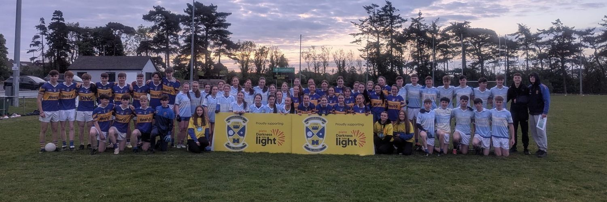
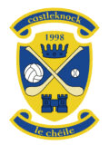
Castleknock Hurling and Football Club
Castleknock Hurling and Football Club has been a cornerstone of the Carpenterstown, Castleknock, and Clonsilla communities since 1998, offering Gaelic football, hurling, camogie, and ladies football for all ages. With top-class facilities at Somerton Park and additional pitches in Porterstown, St Catherine's Park, and Tír na nÓg, the club provides a welcoming environment for players of all levels. For younger children, the Nursery runs every Saturday morning in Tír na nÓg, catering to boys and girls aged 4 to 8, with a focus on fun, teamwork, and skill development - the perfect introduction to Gaelic games.
View full details →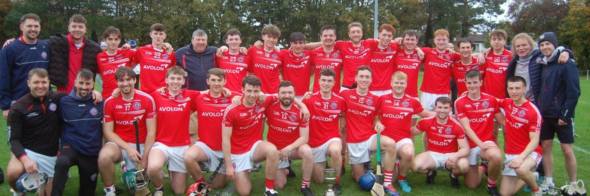
Clontarf GAA Club
Clontarf GAA Club has been at the heart of the community since 1961 and is now the largest sports club in the area, with over 2,100 members playing Gaelic football, hurling, camogie, and ladies football. Our Saturday morning Nursery welcomes boys and girls aged 4-8, introducing them to Gaelic games in a fun, inclusive environment. We also run All Stars, a Friday evening session for children with additional needs. With a growing number of teams across all age groups, Clontarf GAA is a fantastic place for kids to develop skills, make friends, and be part of a thriving club.
View full details →Crumlin GAA Club
Crumlin GAA is a welcoming, family-focused club offering Gaelic football, hurling, and camogie for boys and girls from age 4. Their Academy/Nursery runs Wednesdays at 5:30pm and Saturdays at 10am in Pearse Park, focusing on fun, skill development, and teamwork. Juvenile teams (U8-U16) follow an ‘everybody plays’ policy, ensuring all children get involved.
View full details →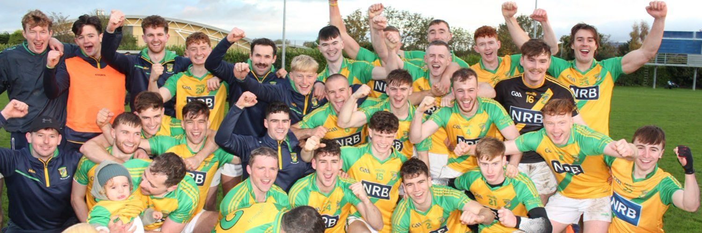
Faughs GAA
Faughs provides a fun and inclusive environment for children to learn and enjoy hurling and camogie. With teams from Under-8 to Under-16 and a thriving academy for younger players, the club focuses on skill development, teamwork, and a love for the game. Camogie has grown rapidly since joining Faughs in 2003, with teams now competing at all juvenile levels. The club's top-class facilities in Tymon Park, including a dedicated juvenile pitch, ball wall, and all-weather training area, offer young players the perfect space to train and improve.
View full details →Kevins
Kevins GAA Club provides hurling and camogie opportunities for children of all ages and skill levels. The club's ABC Nursery, open to boys and girls aged 4 to 7, focuses on agility, balance, and coordination through fun-based exercises that introduce the basics of the games in an engaging and supportive environment. Sessions take place at Loreto College on Crumlin Road every Saturday from 10:30-11:30am. Hurleys and helmets are provided for beginners. As children progress, they can join age-group teams that compete in hurling, camogie, and rounders.
View full details →

Kilmacud Crokes GAA
Kilmacud Crokes GAA Club provides a welcoming environment for children to learn and enjoy Gaelic games. The Nursery Programme, open to boys and girls aged 4 to 7, introduces them to Gaelic football, hurling, camogie, and ladies' football, with a focus on fun, skill development, and fundamental movement skills in a structured yet engaging setting. The club also offers a variety of summer camps, including inclusive programmes with Special Needs Assistants (SNAs) to ensure all children can participate. A highlight is the Mini-All Ireland Festival, where over 1,000 boys and girls take part in a friendly, community-driven competition.
View full details →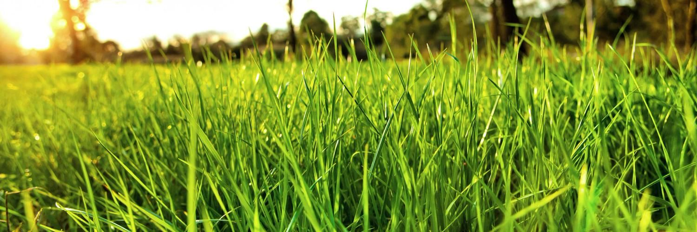
Lucan Sarsfields GAA
Lucan Sarsfields GAA Club offers a welcoming environment for children born in 2018, 2019, 2020, and 2021 to get involved in football, hurling, ladies' football, and camogie. The club's academy is designed to introduce children to Gaelic games, focusing on developing fundamental skills, teamwork, and providing a fun and supportive setting. The academy helps children build coordination, confidence, and a love for the sport while encouraging participation and inclusivity. With a strong emphasis on creating a sense of community, Lucan Sarsfields is committed to nurturing the next generation of players and helping them grow both in sports and as individuals.
View full details →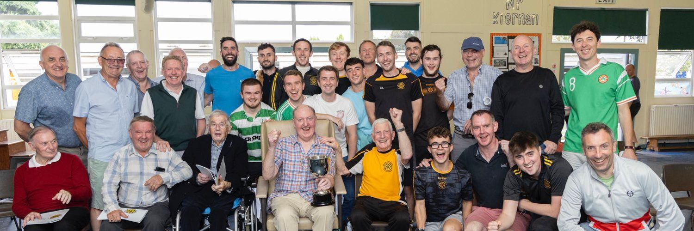
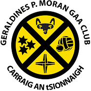
The Gers
Geraldines P. Moran GAA Club, known as The Gers, is a well-established GAA club based in Cornelscourt-Foxrock, Dublin. With a strong focus on community, teamwork, and fun, the club provides a safe and inclusive environment for children of all ages to develop their skills in Gaelic football and hurling. With 29 thriving teams, The Gers is always open to new members, whether your child is a complete beginner or an experienced player. The club is dedicated to fostering a love for Gaelic games while helping young players build confidence, friendships, and a strong team spirit.
View full details →No classes match your filters.